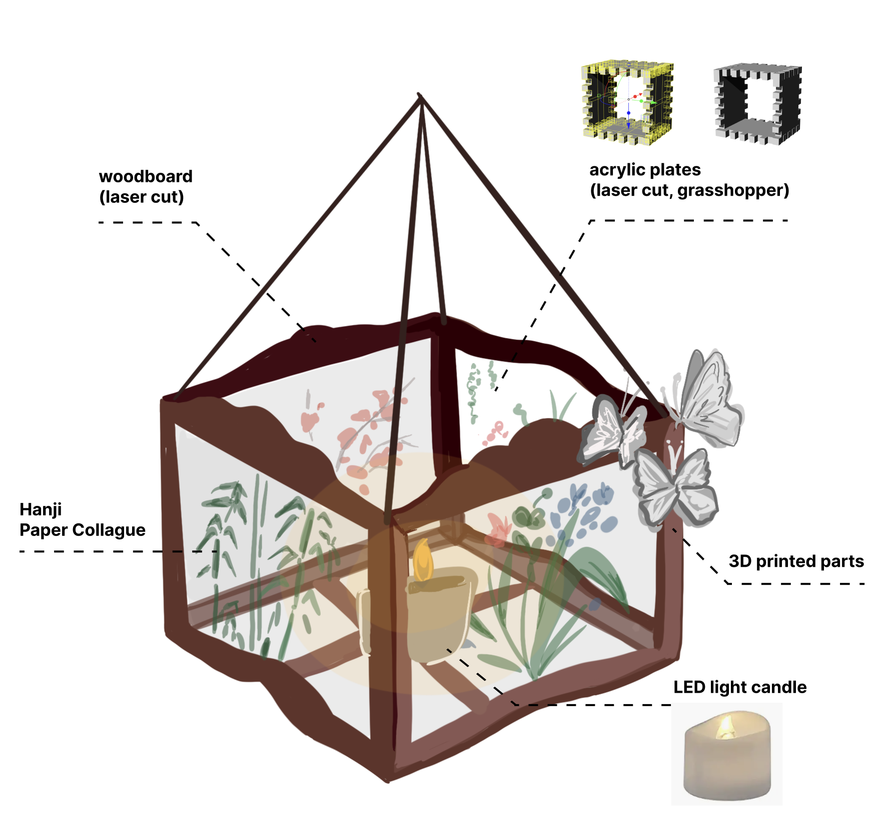
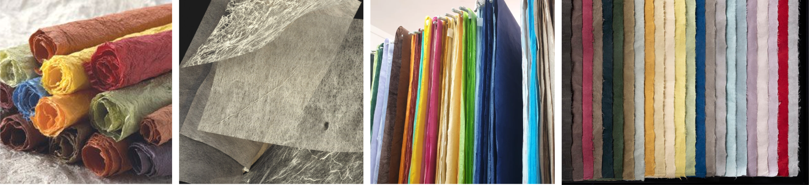
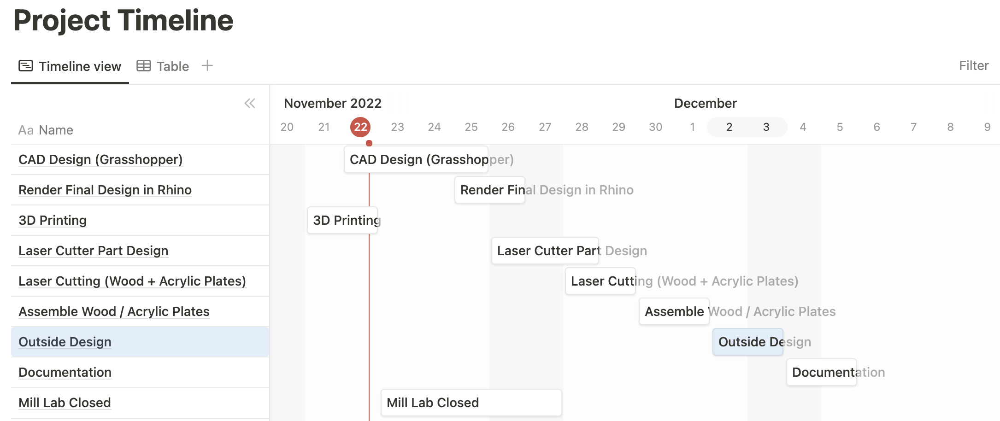
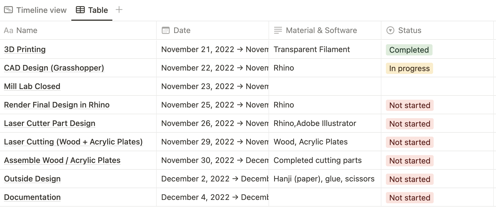
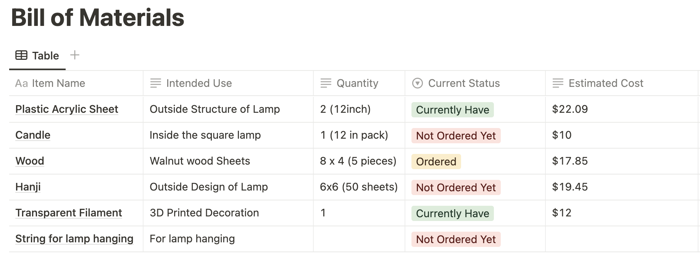
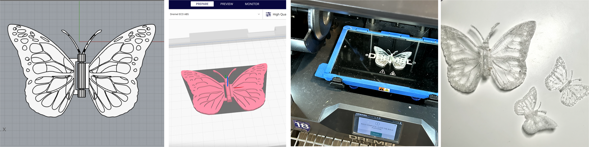

Final Project Proposal
Joseon style traditional glass lamp ?

To design the CAD for the silicon mold, I conducted the "Draft angle analysis" to figure out the parting line and made a mid draft curve first. Then I designed the outside part of the model it self, which has a V shaped hole so that later plaster can be put in there.
Ideation and Moodboard

I redesigned the lamp innereds again because the previouse design didn't consider the lightbulb length, so it can't make the lamp standable. So I redesigned it.
Initial Sketch

Hanji - Traditional Korean Paper

Project Timeline
For the mold fabrication, I found a stl model and edited the mesh to be a 3d printed mold design. With the class's tips for mold design, I made a V shape so the later casting easier.


Project Materials
I exported the model into Cura. I set the quality as "High Speed", 20% Infill. However, the printed model failed twice and collapse while it was printing. I need advice for the mold design have to reprint it next week!

Current Process

Appendix
Link to the modified mesh Stl file (stl) by. Soo Hwang Link to the Lamp Innered File (stl) by. Soo Hwang